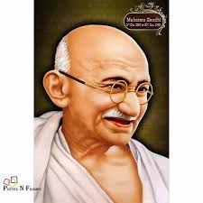
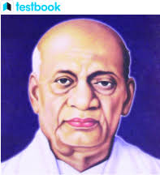

India’s freedom movement against the British was witness to an overwhelming participation of people throughout the country. From Kashmir to Kanyakumari, Assam to Gujarat, thousands of men and women fought together against atrocities of the British Raj. While many selflessly gave their lives to protect the dignity of their motherland, others got injured and embraced imprisonment. Let us know about a few brave freedom fighters from various parts of colonial India who gave their lives to achieve freedom for their beloved motherland:
Mahatma Gandhi
India’s freedom movement against the British was witness to an overwhelming participation of people throughout the country. From Kashmir to Kanyakumari, Assam to Gujarat, thousands of men and women fought together against atrocities of the British Raj. While many selflessly gave their lives to protect the dignity of their motherland, others got injured and embraced imprisonment. Let us know about a few brave freedom fighters from various parts of colonial India who gave their lives to achieve freedom for their beloved motherland:
Sardar Ballam Bhai Patel
India’s freedom movement against the British was witness to an overwhelming participation of people throughout the country. From Kashmir to Kanyakumari, Assam to Gujarat, thousands of men and women fought together against atrocities of the British Raj. While many selflessly gave their lives to protect the dignity of their motherland, others got injured and embraced imprisonment. Let us know about a few brave freedom fighters from various parts of colonial India who gave their lives to achieve freedom for their beloved motherland: